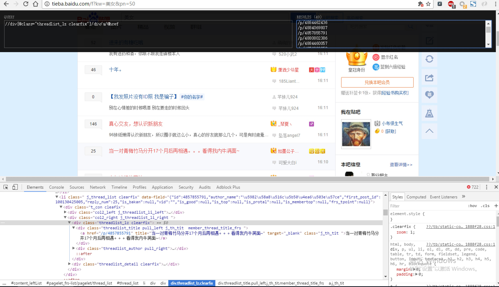

案例：使用XPath的爬虫
现在我们用XPath来做一个简单的爬虫，我们尝试爬取某个贴吧里的所有帖子，并且将该这个帖子里每个楼层发布的图片下载到本地。
#coding=utf-8
import requests
from lxml import etree
import json
class Tieba:
def __init__(self,tieba_name):
self.tieba_name = tieba_name #接收贴吧名
#设置为手机端的UA
self.headers = {"User-Agent": "Mozilla/5.0 (iPhone; CPU iPhone OS 9_1 like Mac OS X) AppleWebKit/601.1.46 (KHTML, like Gecko) Version/9.0 Mobile/13B143 Safari/601.1"}
def get_total_url_list(self):
'''获取所有的urllist'''
url = "https://tieba.baidu.com/f?kw="+self.tieba_name+"&ie=utf-8&pn={}&"
url_list = []
for i in range(100): #通过循环拼接100个url
url_list.append(url.format(i*50))
return url_list #返回100个url的urllist
def parse_url(self,url):
'''一个发送请求，获取响应，同时etree处理html'''
print("parsing url:",url)
response = requests.get(url,headers=self.headers,timeout=10) #发送请求
html = response.content.decode() #获取html字符串
html = etree.HTML(html) #获取element 类型的html
return html
def get_title_href(self,url):
'''获取一个页面的title和href'''
html = self.parse_url(url)
li_temp_list = html.xpath("//li[@class='tl_shadow']") #分组，按照li标签分组
total_items = []
for i in li_temp_list: #遍历分组
href = "https:"+i.xpath("./a/@href")[0] if len(i.xpath("./a/@href"))>0 else None
text = i.xpath("./a/div[1]/span[1]/text()")
text = text[0] if len(text)>0 else None
item = dict( #放入字典
href = href,
text = text
)
total_items.append(item)
return total_items #返回一个页面所有的item
def get_img(self,url):
'''获取一个帖子里面的所有图片'''
html = self.parse_url(url) #返回elemet累心的html，具有xpath方法
img_list = html.xpath('//div[@data-class="BDE_Image"]/@data-url')
img_list = [i.split("src=")[-1] for i in img_list] #提取图片的url
img_list = [requests.utils.unquote(i) for i in img_list]
return img_list
def save_item(self,item):
'''保存一个item'''
with open("teibatupian.txt","a") as f:
f.write(json.dumps(item,ensure_ascii=False,indent=2))
f.write("\n")
def run(self):
#1、找到了url规律，url list
url_list = self.get_total_url_list()
for url in url_list:
#2、遍历urllist 发送请求，获得响应，etree处理html
# 3、提取title，href
total_item = self.get_title_href(url)
for item in total_item:
href = item["href"]
img_list = self.get_img(href) #获取到了帖子的图片列表
item["img"] = img_list
# 4、保存到本地
print(item)
self.save_item(item)
if __name__ == "__main__":
tieba = Tieba("猫")
tieba.run()
